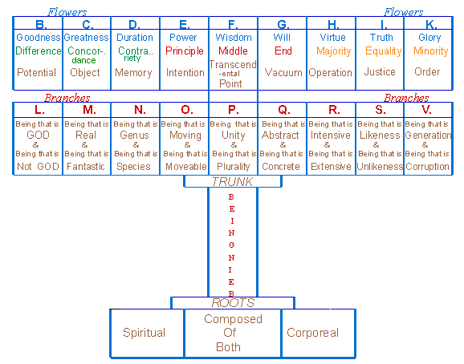

Blessed
Raymond Lull
Doctor
Illuminatus and Martyr

Contents First Section Second Section Third Section Fourth Section
GOD, by the Virtue of your Trinity,
here begins
The Desired Philosophy Tree.
1. Alone in the shade of a beautiful tree in a garden, I was considering
GOD & the state this world is in. I was sad, because the Lord our GOD
is so little beloved & known by his people. Few are those who love
him & know him, & duly honor him, & thank him for the good
they receive from him. And many are those who dishonor him, for on account
of small things of little worth, they fail to love & know him because
they love such things more than him, & work harder for them, &
so they are on the path to damnation, traveling toward eternal fire. And
they lose that glory which is so great, that all men, whatever their number,
cannot express it in full.
2. As I was thinking these sorrowful thoughts, there came upon me,
on account of the presence of the Tree under which I was, the desire to
write this Book & send it to my Son, so that with it he can acquire
Memory & Science. With this Memory & Science he could get to know
GOD, & love GOD, & serve him with this Book, taking it to various
lands to spread the knowledge of GOD.
3. Therefore, my Son, as I naturally love you, & if you are good
& virtuous, I love you even more, I send you this Book. And know
that this Book is good & useful for many things, such as remembering,
understanding & loving GOD, & making the Holy Catholic Faith known
to those who do not know it, & for destroying the errors & false
opinions of this world, & for putting & solving questions, for
counseling, for fostering the virtues & destroying vices & so forth,
for many other conditions.
4. You should know, my Son, that there are good & useful things
in this Book. You can know & experience them, if you know how to harvest,
preserve & love the Fruit of this Tree. Therefore, I urge & advise
you to be a cultivator of this Tree as long as you live, for it will enable
you to attain eternal life, if you know how to dwell in its shade &
eat of its fruit.
5. Know, my Son, that this Tree contains one species of the Art
of Memory, & this species is its process. Now as the world is
in great need of this Art, I desire very much to have the time & opportunity
to write it; but I am too preoccupied with other things that I cannot bring
to closure, & few are those who help me.
The Four Sections into which this
Book is divided
1 - The First Section explains the Structure of this book.
2 - The Second Section deals with the Rules used for putting
& solving questions.
3 - The Third Section contains the Propositions, necessary
for solving questions, & for gaining knowledge about many things.
4 - The Fourth Section deals with the Questions, which can
be solved by applying the Propositions and the Rules.
1 - THE FIRST SECTION - THE STRUCTURE OF
THIS BOOK
This Section is divided into Three Parts:
PART 1 - THE FIGURE OF THE TREE
PART 2 - THE CIRCULAR FIGURE
PART 3 - THE DEFINITIONS OF THE PRINCIPLES OF THIS TREE
PART 1 - THE FIGURE OF THE TREE
The Roots & Trunk of the Tree
In the First Part, we show the Figure of this Tree as follows: the
Roots are made of a Chaos that is a confused mixture compounded of both
spiritual & corporeal things, and therefore the Tree has three Roots:
the first is spiritual, the second is corporeal & the
third,
a mixture of both, is the said confused Chaos.
In the Trunk of the Tree we write the word 'Being', & we
do so because all things can be considered under Being, given that Being
is the most general term we can name, & we consider Being in nine
modes, as these nine modes include everything that can be thought of.
The Branches of this Tree
1. The Branches of this Tree are:
Being that is GOD, & Being that is not GOD.
Being that is Real, & Being that is Imaginary.
Being that is Genus, & Being that is Species.
Being that is Moving, & Being that is Mobile.
Being that is Unity, & Being that is Plurality.
Being that is Abstract, & Being that is Concrete.
Being that is Intensive, & Being that is Extensive.
Being that is Likeness, & Being that is Unlikeness.
Being that is Generation, & Being that is Corruption.
2. This Tree is planted in the memory, intellect & will, & especially
in the operations of these powers. Its procedure enables the memory to
remember past things, the intellect to understand truth & the will
to love good things & hate evil. These operations can be done artificially,
following the doctrine & Art of this Tree.
3. And do you know, my Son, why men do not know how to use their
memory to recall past things, or their intellect to investigate the truth,
or their will to choose good & reject evil? It is because they do not
know how to apply the artificial instrument proper to these powers
when they use them. And I convey this Tree to you, my Son, as an artificial
instrument to show you how to use your remembering, understanding &
loving, if you learn it well.
4. The Water with which you must irrigate this Tree comes from Three
Fountainheads: namely Faith, Hope & Charity: & from the River
that springs from these three Fountains flow four Rivulets called
Justice, Wisdom, Strength & Temperance. And you must water this Tree
in
ten ways, as there are Ten Commandments, & generously give out
its fruit in seven ways, as there are Seven Gifts of the Holy Spirit.

The Circular Figure contains four circles, three of which are moveable, as shown, & in the outermost circle, the letters B,C,D,E,F,G,H,I,K are written in nine Cameras. The next circle has nine Cameras with the letters L,M,N,O,P,Q,R,S,V. Then the next circle has the same letters as the outermost circle, namely B,C,D etc., & the fourth circle has nine Cameras containing the same letters as the second circle, namely L,M,N etc.
The Flowers of this Tree
1. This Tree contains the twenty-seven following Principles,
or Flowers:
Goodness, Difference, Potential.
Greatness, Concordance, Object.
Duration, Contrariety, Memory.
Power, Beginning, Intention.
Wisdom, Middle, Transcendent Point.
Will, End, Vacuum.
Virtue, Majority, Operation.
Truth, Equality, Justice.
Glory, Minority, Order.
2. Eighteen of these Principles are from Ars Inventiva, Ars Amativa & Ars Generalis, & they are expounded in the said Arts. But we want to deal with this Art as succinctly as possible, and so we will not explain them here, because you can learn them in the other Arts.
The Meanings of the Letters In the Circular Figure
B. Means Goodness, Difference, & Potential.
C. Means Greatness, Concordance, & Object.
D. Means Duration, Contrariety, & Memory.
E. Means Power, Beginning, & Intention.
F. Means Wisdom, Middle, & the Transcendent Point.
G. Means Will, End, & Vacuum.
H. Means Virtue, Majority, & Operation
I. Means Truth, Equality, & Justice.
K. Means Glory, Minority, & Order.
L. Means Being that is GOD, & Being that is not GOD.
M. Means Being that is Real, & Being that is Imaginary.
N. Means Being that is Genus, & Being that is Species.
O. Means Being that is Moving, & Being that is Mobile.
P. Means Being that is Unity, & Being that is Plurality.
Q. Means Being that is Abstract, & Being that is Concrete.
R. Means Being that is Intensive, & Being that is Extensive.
S. Means Being that is Likeness, & Being that is Unlikeness.
V. Means Being that is Generation, & Being that is Corruption.
My Son, you must know the above meanings by heart if you want to learn this Art, or else the knowledge of this Art will escape you: & this applies to everyone who wants to learn how to observe the meanings of the letters.3. You can guide your discourse with this Figure, my Son, by turning its concentric circles to form Cameras, for instance: in Camera BLCM the letters are aligned so that B is in the outermost circle, L in the second, C in the third, & M in the fourth circle. Now follow their meanings, & apply them all to the issue at hand by making affirmative or negative statements, so that the affirmations or negations in your answer are pertinent to the question and in keeping with the meanings of the letters and the Definitions of the Principles of this Science signified by the letters in this Figure. This Rule is general to this Science, & it will never fail you if you know how to observe it.
4. My Son, if you wish to form another Camera, you can move on from L in the second circle & put M under B, & keep C under M, & put N under C, as B & C have one meaning with M & another with N, and so on with the other letters in alphabetical order. And you can form all the Cameras you want, as you want, & adduce them all to the issue at hand in accordance with the questions put to you, & the various things you want to investigate, as you abide by the meanings of the Cameras.
5. When a question is put to you, my Son, note the particular terms of that question, & investigate their natural properties with this Science, & form your answer accordingly. You will discover these natural properties as you mix the terms with each other in the Circular Figure by turning the concentric circles & taking in the meanings of the terms according to the doctrine given in this Tree. For example, if we ask whether there is goodness, greatness, etc. in GOD, put P under the outermost B, & put C under P, & consider the Flowers of the Tree to which the question refers, & you will find the answer by following the meanings of the letters. And if a question put to you contains no obviously explicit Principles of this Tree - for example, if someone asks whether fire is dry in itself - then reduce the terms of the question to the terms of this Science in which all terms are implicitly contained, for instance: fire is good, great, & so on.
PART 3 - THE DEFINITIONS
The natures of the above Principles are defined in this part, which
is subdivided into two parts:
The First Part contains the Definitions of B, C, D, E, F, G, H,
I, K.
The Second Part contains the Definitions of L, M, N, O, P, Q, R,
S, V.
Definitions of B
The Definition of Goodness
Goodness is that by reason of which good does good, & thus
it is good to be, & evil not to be.
1. My Son, this is the definition of Goodness, & if anyone asks
you any question about Goodness, keep to this definition in your affirmations
and negations. And if you cannot stand by this definition with affirmation,
then choose negation; and if you cannot stand by it with negation, then
conclude with an affirmative answer. And proceed in the same order with
the other Principles of this Science.
2. It is also useful for you to decline each principle as follows:
you can decline Goodness as the bonifier, bonifiable and bonifying; &
Difference as the differentiator, differentiable & differentiating;
& you can do the same with the other Principles of this Science, always
choosing to decline the terms which are the most suitable for answering
the question.
The Definition of Difference
Difference is that whereby Goodness, Greatness, & the other
Principles are clear reasons without any confusion.
Now Goodness, Greatness, etc. are declared to the human intellect by
Difference. My Son, you should consider this Difference in three ways:
namely the Difference that is between sensual & sensual, between sensual
& intellectual, & between intellectual & intellectual. There
is Difference between sensual & sensual, as between a horse & a
lion; Difference between sensual & intellectual, as between the body
& the soul; Difference between intellectual & intellectual, as
between GOD & angels. And note, my Son, that by 'sensual' we mean the
beings that are able to sense things, as well those which can be sensed:
& we apply the term 'intellectual' to beings that are spiritual and
not corporeal.
The Definitions of Potential
A Power (or Potential) is a Being that has greater Concordance
with its object than with any other being. And Potentiality the subject
in which beings exist in the possibility of becoming actual.
Potential can be considered in two ways, & so we give it
a dual definition. These, my Son, are the definitions of the letter B,
& therefore you will consider these definitions in all the cameras
where you see B, & follow them when answering any question that may
be put to you about B.
Definitions of C
The Definition of Greatness
Greatness is that by reason of which Goodness, Duration, Power
&
the other Principles of this Science are great.
The Definition of Concordance
Concordance is that through which Goodness, Greatness, Power
etc. agree in unity & in plurality.
They are concordant in unity, for instance: the Goodness of
body & soul, as well as their Greatness convene in one being. And they
are concordant in plurality: as in the numerous parts of substance,
& in numerous men in whom they convene. And you, my Son, will consider
concordance in three ways: Concordance between sensual & sensual:
as between fire & air which convene in heat; Concordance between sensual
& intellectual, as between the soul & the body which convene in
constituting one substance; and Concordance between intellectual &
intellectual: like GOD & angels, who convene in loving & understanding.
The Definition of the Object
The object is that Being in which the power is signified more
than in any other being.
Objects are, for instance: color, which is the object of the eyes,
as sound is of the ears, and fragrance of smell, and savor of taste, and
tangible things are objects of touch, imaginable things are objects of
the imagination, things remembered are objects of memory, things understood
are objects of the intellect, lovable things are objects of the will, and
likewise with other things like these.
Definitions of D
The Definition of Duration
Duration is that by reason of which Goodness, Greatness, Power,
etc. are lasting.
The Definition of Contrariety
Contrariety is mutual resistance due to divergent ends.
My Son, you will consider this definition in three ways: namely
between sensual & sensual, between sensual & intellectual, and
between intellectual & intellectual. Between sensual & sensual,
as between fire & water; between sensual & intellectual as between
body & soul; between intellectual & intellectual, as between a
good Angel and an evil angel.
The Definition of Memory
Memory is the power meant for conserving the species that the
intellect reproduces from real things by affirming & negating, &
the species that the will reproduces from real things by loving & hating.
Know, my Son, that this power is one part of the rational soul; & that in this Book you can acquire an artificial process for recollecting past things, if you know how to use the meanings conveyed by the Cameras of the Second Figure, & if you know how to avail yourself of the Propositions & Rules of this Science.
Definitions of E
The Definition of Power
Power is that through which Goodness, Greatness, Duration, &
the other Principles can exist and act.
The Definition of the Beginning
The beginning is something that comes before everything else
on account of some priority.
My Son, you will consider this definition of beginning in two ways,
namely: substantial Beginning & accidental Beginning; substantial
Beginning is considered in four ways, namely, as the Efficient,
Material, Formal, & Final causes. Efficient: like a housebuilder
building a room. Material: like the stones & wood of which the
room is made. Formal: like the visible shape of the room. To live
in the room is the Final cause, since the room is built for someone
to live in it. There are accidental Principles, like color &
heat; given that color is the Principle of coloring, & heat is the
Principle of heating, & so on with other accidents like these.
The Definition of Intention
Intention is the instrument with which the end has its beginnings
for itself.
My Son, you will consider Intention in two ways, namely: the
first
Intention, for instance: living in a room is the first intention, &
the room made for someone to lived in is the second intention; & eating
is meant for living, and so forth. In this you can follow the procedure
given in the Book on Intention which I wrote for you, so you may
know how to use Intention to know & love GOD, and be well intentioned
and follow the intention for which GOD created you, & endowed you with
being.
2. My Son, it has been a long time since I sent you my Book on Intentions,
& as I have not seen you for quite a while, I do not know whether you
have made any use of it. If you have not put it to any use, I am excused
before GOD for my intention, & you remain guilty of yours, & you
will have to account for this on judgment day, even as you will have to
account for this Tree I sent to you, if you do not learn to dwell in its
shade, & if you do not want to eat of its fruit.
Definitions of F
The Definition of Wisdom
Wisdom is a property by reason of which the wise understand.
The Definition of the Middle
The Middle is the subject in which the End influences the Beginning
with its virtue, which the Beginning sends back, along with its own virtue
to the End of both extremes.
My Son, you will consider the Middle in three ways: namely the
Middle of Conjunction, the Middle of Measure, & the Middle between
Extremes. The Middle (or Medium) of conjunction is like a nail joining
two boards, or like heat that joins fire to air, or loving that joins two
persons together. The Middle of Measure is like a point existing
in the middle of a circle; or loving, that exists in the middle between
the lover & the beloved; & Greatness, in the middle between Goodness
& Duration; & air, in the middle between fire & water. The
Middle
of Extremes is like a line between two points, or a kingdom existing
between two kingdoms, & so forth with other things like these.
The Definition of the Transcendent Point
The Transcendent Point is an Instrument of the human intellect
with which it attains its object above the natures of its lower powers,
& with which it rises above its own nature to attain the Supreme Object.
My Son, you should treasure this definition most dearly in this Science, for it will enable you to learn about GOD, & the Operation He has within Himself, & other operations above the course of nature.
Definitions of G
The Definition of Will
Will is that by reason of which Goodness, Greatness, Duration,
Power etc. are lovable.
The Definition of the End
The end is that in which Goodness, Greatness, & the other
Principles of this Science find rest and delight.
My Son, you will consider the End in three ways: first, the
End of Privation of beings that once were & are no more: like
your mother who once was & is no more. Secondly, there is the End of
Termination,
like the extremities of a body or of a realm. Third, there is the End of
Perfection,
like GOD, who is the End of all things; or like living, which is the End
purpose of eating; & this is the End most spoken of in this Science,
& we have given its definition.
The Definition of Vacuum
Vacuum is the object in which no entity is considered at all.
This definition, my Son, will enable you to consider the necessary
things without which nature cannot be complete; this definition detects
perfection & defect in things, if you know how to guide your discourse
with it by mixing it with the other definitions of this Science.
Definitions of H
The Definition of Virtue
Virtue is the origin of the union of Goodness, Greatness, Duration,
Power, & the other Principles.
The Definition of Majority
Majority is the image of infinite Goodness, Greatness, Eternity,
etc.
My Son, you will consider Majority in three ways: first,
the Majority of one substance as compared to another, for instance: human
substance has greater Virtue than the substance of horses. The second
kind
of Majority is that of substance over accident, for instance: the Goodness
of your body is greater than that of your color. The third kind
of Majority is that of one accident as compared to another, for instance:
understanding is a nobler accident than seeing.
The Definition of Operation
Operation is the Being which completes or perfects the appetite
of the cause and its effect.
Know, my Son, that this definition greatly enlightens the human intellect,
once you know how to mix it in discourse with other definitions, as it
enables you to learn about the essence of the operator, the operation,
& the natural appetite between them.
Definitions of I
The Definition of Truth
Truth is that whereby Goodness, Greatness, Duration, Power etc.
are true.
The Definition of Equality
Equality is the subject in which the Final Concordance of Goodness,
Greatness, etc... reposes.
My Son, you will consider Equality in three ways: first,
Equality between one substance & another substance, for instance: the
four elements are equally substantial parts of the universe; secondly,
Equality between substance & accident: for instance, fire and its heat
are equal in extension; third, Equality between one accident &
another, as between understanding and loving.
The Definition of Justice
Justice is the object in which Equality & proportion are
conserved.
Proportion, my Son, is the ordering of all parts for one end: like
the limbs of a body proportioned in the right size for that body, &
so forth with other things like these.
Definitions of K
The Definition of Glory
Glory is the delight in which Goodness, Greatness, Duration,
Power, etc... find repose.
The Definition of Minority
Minority is a Being close to non being.
My Son, you will consider Minority in three ways. First,
the Minority of one substance as compared to another substance, for instance:
stones have less substantial Goodness than trees. Secondly, the
Minority of accidents as compared to substance, for instance: heat is something
less than fire. Third, the Minority of some accidents as compared
to other accidents, for instance: seeing is less than hearing, & smelling
is less than seeing, & so on with other things like these.
The Definition of Order
Order is the natural property on account of which things are
both proper and common.
SECOND PART OF PART THREE
Definitions of L
The Definition of the Being that is GOD
GOD is the Being in whom Goodness, Greatness, Eternity, Power,
Wisdom, Will & all other appertaining dignities are one identical number.
In no being, my Son, are Goodness, Greatness, Eternity, Power, Wisdom
& Will one & the same number, except in GOD alone. Now if there
were any such beings, any one of them could be GOD as many times as its
will desired to be GOD, because each one could know & obtain whatever
its Goodness, Greatness, & Duration want to have. And as in GOD Power,
Wisdom And Will are one identical number, GOD can have all that He can
will & know, because his willing is as great as his powering &
knowing; & his powering is as great as his knowing & willing; &
likewise, his knowing is as great as his powering & willing. For this
reason, GOD can do anything except what is defective or sinful, which He
cannot do because He does not want to, since his Power, Wisdom & Will
are one and identical with Goodness, Greatness, Eternity, Virtue, Justice
& Perfection, so that He cannot do anything sinful or defective.
The Definition of Being that is not GOD
Being that is not GOD is that which is a creature.
This created being, my Son, is considered in eight species or modes
which include all created beings, namely: Angels, the Firmament, the
Rational Soul, the Imaginative Power, the Sensitive Power, the Vegetative
Power, the Elementative Power & the Instrumental Power. And so,
as questions are put to you, always consider the terms of the questions
to see under which of these eight species they fall, & respond according
to their nature & according to the process of this Science.
Definitions of M
The Definition of Being that is Real
Real Being is that from which the human intellect draws the likenesses
with which it composes its imaginary understanding.
This being, my Son, is called real because it exists on its own; &
even if there were no human intellect, it would still be what it is in
itself.
The Definition of Being that is Imaginary
Imaginary Being is that which the human intellect reproduces
& composes from the species in which it attains the truth about things.
This being, my Son, would not exist if the human intellect were not
what it is.
Definitions of N
The Definition of the Being that is Genus
Genus is the Being that exists above the species of things.
My Son, substance is called the most general genus, & animals constitute
a subordinate genus.
The Definition of the Being that is Species
Species is the Being that is included in genus, & includes
its individuals.
My Son, think of this, for instance, as the species of humans &
lions, which are included in the genus of animals; & the human species
includes individuals like Francis, Dominic, Raymond, etc...
Definitions of O
The Definition of the Being that is the Mover
The Mover is the Being that moves potential things from power
into act.
Know, my Son, that the Mover can be considered in many ways.
There is the Mover that moves itself by itself: like a man who moves
his feet at will and walks from place to place. Another kind Mover moves
itself
with something else: like a rider who moves from place to place on
horseback. And another kind of Mover moves other things with itself,
like a ruler who deliberately sends a vassal from place to place, or like
a writer who moves a pen with his hand. And yet another kind of Mover moves
one thing with another, like a writer who moves ink with a pen, and
letters with ink. And there is another Mover that moves
another thing
within itself, for instance: fire moves air within itself, causing
it to heat; & vegetative form moves remote vegetal matter within its
innate vegetal matter; & sight moves the remote visible within its
own
visible; & likewise, the intellect moves remote intelligible objects
within its own innate intelligible part. There is, my Son, another mode
of the Mover, when an object, by its disposition, is an occasion for
a power to move towards it; & so with other similar things.
The Definition of the Being that is Mobile
The Being that is Mobile is the mover's own object.
My Son, you can consider this being in two ways, namely, according
to natural & artificial mobility: natural mobility, as when
water is heated; & artificial mobility, as when a writer moves
letters, or a blacksmith moves nails; & so with other similar things.
Definitions of P
The Definition of the Being that is Unity
Unity is the Being that is considered without Difference.
This being, my Son, is considered simply in itself, as one goodness,
one greatness, & the same with all things considered in their simplicity.
The Definition of the Being that is Plurality
Plurality is the Being in which Difference appears more strongly than
in any other Being. Understand, my Son, that plurality consists of many
things that are not numerically identical.
Definitions of Q
The Definition of Being that is Abstract
An Abstract Being is one that consists of concrete parts which
belong to its essence as its essence belongs to them.
My Son, this being contains in itself concrete things in which it is
sustained just as they are sustained in it. Goodness, for instance, is
an abstract being that contains in itself essential concrete parts that
simply & essentially belong to it, namely: the bonifier, bonifiable
& bonifying; and likewise with other things.
The Definition of the Being that is Concrete
A Concrete being is one that manifests the figure of its essence.
This being, my Son, is considered in parts, or as consisting of the
parts of essence, as for instance the bonifier, bonifiable and bonifying.
Definitions of R
The Definition of Being that is Intensive
Intensity is the Being that is closer to simplicity than to composition.
With this being, my Son, you can tell which things have more entity,
greater operation, and more virtue in composition.
The Definition of Being that is Extensive
Extensity is the Being that is closer to composition than to
simplicity.
With this being, my Son, you can find out about the mixtures of essential
and concrete things, & the extensions that some things naturally produce
in others.
Definitions of S
The Definition of the Being that is Likeness
Likeness is the Being that exists outside of substance, &
in which intrinsic beings appear.
Likeness, my Son, is subjected to & sustained by the particular
components of the common sense, & especially the recently discovered
& identified sixth Sense, which uses the voice to express intrinsic
mental & imaginary concepts.
The Definition of the Being that is Unlikeness
Unlikeness is the Being in which the figure of Difference &
Contrariety appears.
With this figure, my Son, you can find out how Concordance & Contrariety
exist in contrary Difference in intrinsic things which remain hidden to
those who do not know how to learn this figure.
Definitions of V
The Definition of the Being that is Generation
Generation is the Being that consists of the generator, generable,
and generating.
Know, my Son, that natural things are moved from potentiality into
act by generation; as when a man generates another man, or when he generates
flesh from the food he eats; & as when the intellect generates imaginary
species from likenesses of its object, & as it generates its imaginary
act of understanding from them.
The Definition of the Being that is Corruption
Corruption is the Being that is subjected to generation.
Know, my Son, that corruption reduces actually existing natural things
to privation; as for instance, when man became mortal due to corruption;
or as corruption reduces a tree to privation; & so on with other things
like this.